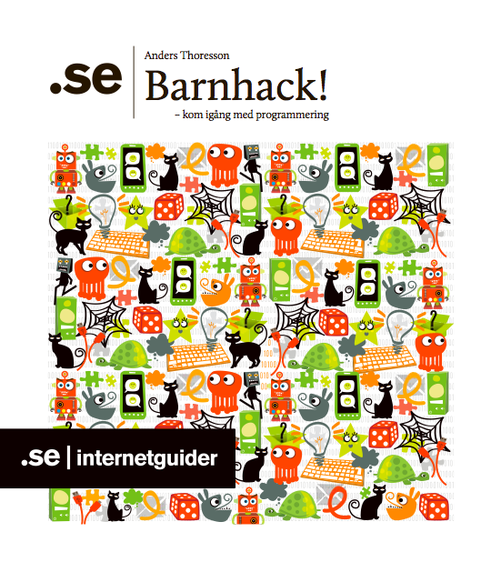

– kom igång med programmering
Det här är en Internetguide från .SE för dig som vill genomföra egna programmeringskurser. Eller laborera tillsammans hemma. Läs eller ladda hem här. https://www.iis.se/lar-dig-mer/guider/barnhack/
Till guiden finns ett kursmaterial med utförliga steg-för-steg-instruktioner: Kom igång med Scratch del 1. Den är till för dig som är en nyfiken nybörjare när det gäller programmering och Scratch. Dokumentet är även en bra start om vill anordna ett Barnhack. https://www.iis.se/docs/Barnhack-del1.pdf